Как все начиналось
История развития напольных покрытий
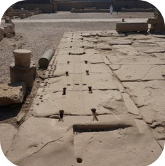
Каменные Плиты
(Древний Египет)
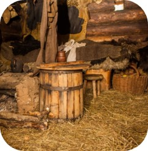
Соломенный пол
(Древний Рим)
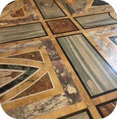
Мраморный пол
(керамика) (Древний Рим)
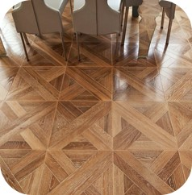
Паркет
(V – XV в.в.)
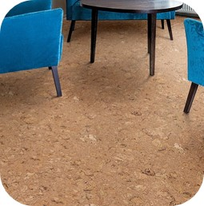
Пробка (XVII в.)
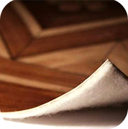
Камптуликон
(XIX в.)
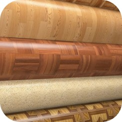
Линолеум
(XIX в.)
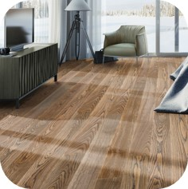
Паркетная доска
(XX в.)
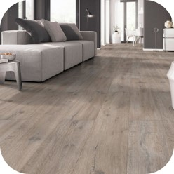
Ламинат (XX в.)
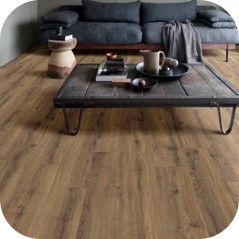
ПВХ-плитка
(XXI в.)
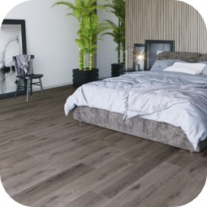
Кварцевый ламинат
(XXI в.)
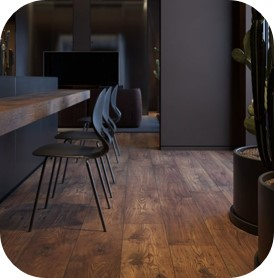
Кварцпаркет
Структура

Виды шпона
Лущеный
Получают путем непрерывного срезания древесного слоя ножом при вращении заготовки Шпон самого низкого качества Неоднородный (большие промежутки между ранней и поздней древесиной) Самый бюджетный - используют для фанеры
Пиленый
Большой расход дерева (потеря 30% шпона при изготовлении)
Строганый
Получают путем срезания поперечных слоев дерева
Древесные листы самого высокого качестваПравильное расположение волокон
Сохраняются все физические свойства, оттенок, текстура дерева
Однородная поверхность (не видно стыков)
Равномерный цвет
Привлекательная фактура
Всегда досушен
Экология
1 куб дерева